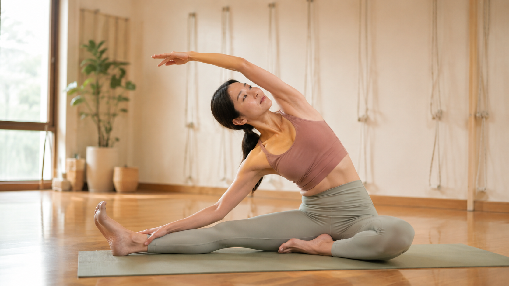

搭長途飛機後全身僵硬？出發前、飛行中、下機後怎麼安排

- 長途飛行下來腰痠背痛、腳踝腫脹，主因是長時間久坐不動加上機艙環境，不是你的身體特別脆弱。
- 這篇從出發前、飛行中、下機後三個階段整理，重點是簡單、不打擾鄰座、真的做得到。
- 探親、跟孫子出遊是這個年齡層常見的長途飛行情境，不是只有商務旅客需要留意這件事。
- 這篇談的是一般性的旅途舒適建議，不是醫療處置，有特殊健康狀況請先諮詢醫師。
出國探親、帶孫子出去玩，長途飛機坐下來，腰痠背痛不說，腳踝還腫得鞋子都快穿不下。這種疲勞感很多人都有經驗，卻很少認真想過可以怎麼安排，才不會每次旅行回來都要花好幾天恢復。這篇從出發前、飛行中、下機後三個階段，整理一些簡單、實際做得到的方式。
出發前：身體狀態不是登機才開始算
很多人出發前忙著打包行李、處理雜事，反而讓自己在登機前就已經很疲勞、很緊繃，等於是帶著一身緊繃開始一段長時間久坐的旅程。比較實際的準備方向：行李提早一兩天整理完，不要留到出發當天才手忙腳亂；選擇比較好活動、腰部不會被束緊的服裝，鞋子也以方便走動、活動腳踝為主；出發前一晚盡量不要熬夜趕行程，讓身體從相對放鬆的狀態開始這趟旅程，而不是一路緊繃著上飛機。
飛行中：座位上就能做的小動作
機艙空間有限，不太可能做大幅度的伸展，但座位上其實有不少不會打擾到鄰座的小動作：
- 腳踝繞圈與勾繃：腳跟著地，腳尖畫圈，或反覆勾起、繃直腳尖，促進下肢循環，減少久坐造成的腫脹。
- 坐姿轉體：雙手扶著前方座椅或扶手，緩慢地左右轉動上半身，活動脊椎與腰部。
- 肩頸繞動：肩膀緩慢地往前、往上、往後、往下畫圈，舒緩長時間固定姿勢造成的肩頸緊繃。
- 座位上的骨盆微調：不時把重心從左右兩側坐骨之間微微轉移，避免同一個位置持續受壓太久。
如果航程允許，走道淨空時起身走動幾分鐘，會比一直坐在位子上做小動作更有幫助——活動整條腿的大肌群，對循環的幫助比單純動腳踝更明顯。
下機後：不要急著把疲勞感當成正常
下機後全身僵硬、腰痠背痛，很多人會直接當成「本來就會這樣」，忍一忍就過去。其實下機後的前一兩天，是身體最需要溫和活動、幫助循環恢復的時候，而不是繼續久坐（例如馬上又搭車、又長時間坐著）。到了目的地或回到家，可以安排一些簡單的走動、伸展，讓身體有機會重新調整回平常的活動節奏，而不是讓久坐狀態無縫接軌下去。
為什麼這個年齡層，特別容易感覺到長途飛行的負擔
探親、跟著孫子出國玩，是這個階段常見的長途飛行情境，跟年輕時純粹自己旅行的疲勞感不太一樣——除了長時間久坐本身的負擔，往往還疊加了時差調整能力隨年齡漸緩、循環系統對久坐久站的耐受度變化等因素。這不代表這個年齡層不適合長途旅行，而是提醒可以更主動地安排前面提到的幾個階段，而不是假設身體會像年輕時一樣自動恢復。
壁繩瑜伽在這裡，能幫上什麼忙
壁繩瑜伽不是治療旅行疲勞的醫療方式，這篇不會這樣宣稱。它能扮演的角色，是提供一個溫和、有支撐的環境，幫助長途久坐後緊繃的髖部、下背、肩頸重新找回活動的感覺——繩帶的支撐讓你不需要勉強自己做大幅度的伸展，可以在有依靠的狀態下，慢慢把因為久坐而卡住的地方鬆開。如果你發現自己每次長途旅行後都要花特別久的時間恢復，也可以藉這個機會了解一下自己平常的姿勢代償模式，是不是也讓身體對久坐特別沒有耐受度。
整理一下：三個階段各自的重點
| 階段 | 可以留意的重點 |
|---|---|
| 出發前 | 提早整理行李、穿好活動的衣物鞋子、避免熬夜趕行程 |
| 飛行中 | 座位上做小幅度活動，走道淨空時起身走動 |
| 下機後 | 安排溫和活動幫助循環恢復，不直接無縫接軌到下一段久坐 |
長途飛行的疲勞，很大一部分來自長時間固定不動，而不是旅行本身有多累人。把這三個階段都照顧到，通常能讓身體的負擔小一些，也能少花幾天時間恢復，把力氣留給真正想做的事。
本文為一般性旅途舒適與體態知識分享，非醫療診斷或治療。若有靜脈血栓病史、心血管疾病或其他特殊健康狀況，長途飛行前請先諮詢醫師建議。
常見問題
長途飛行後腳踝腫脹，是正常的嗎？
長時間久坐、機艙氣壓變化，確實容易讓下肢水分滯留、腳踝浮腫，這是常見的生理反應。但如果腫脹合併單側疼痛、發紅發熱，或呼吸不順，建議提高警覺，必要時尋求醫療協助，不要當成單純的旅行疲勞處理。
飛機上可以做什麼伸展，不會打擾到鄰座？
座位上可以做的動作包括腳踝繞圈、勾繃腳尖、坐姿轉體、肩頸繞動，這些動作幅度小，通常不會影響到鄰座。真的需要更大幅度的伸展，可以趁走道淨空時起身走動、在艙門附近做幾個動作。
長途飛行前，需要特別做什麼準備嗎？
沒有硬性規定，但提早整理行李、選擇比較好活動的服裝與鞋子、避免出發前一晚熬夜趕行程，都有助於讓身體在飛行前不是已經處於疲勞、緊繃的狀態。
下機後全身僵硬，多久會恢復？
因人而異，跟飛行時間長短、機上活動量都有關。多數人在下機後一到兩天內，隨著活動量恢復、時差調整過來，僵硬感會逐漸改善，不需要特別緊張。
壁繩瑜伽能幫助長途飛行後的恢復嗎？
壁繩瑜伽不是治療旅行疲勞的醫療方式，這篇不會這樣宣稱。它能扮演的角色，是提供一個溫和、有支撐的方式，幫助身體重新找回活動的感覺，處理久坐帶來的緊繃與循環變慢的狀況。